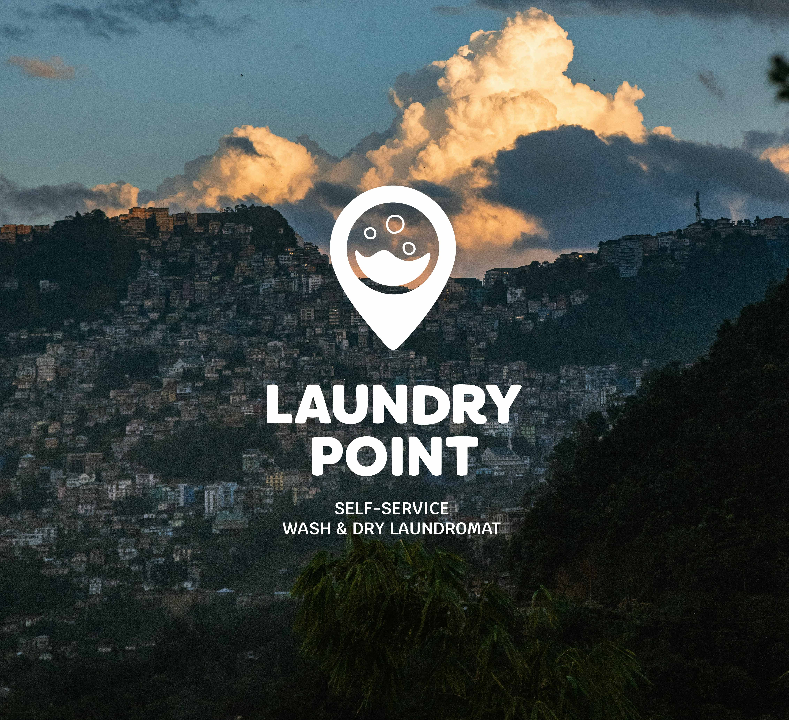
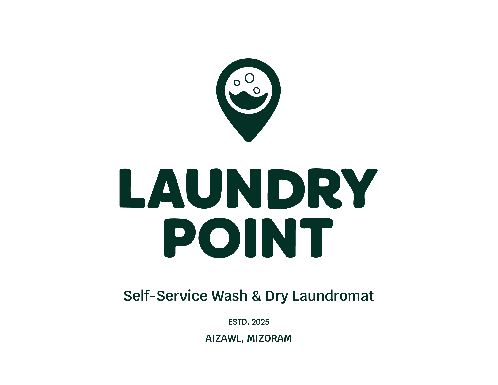
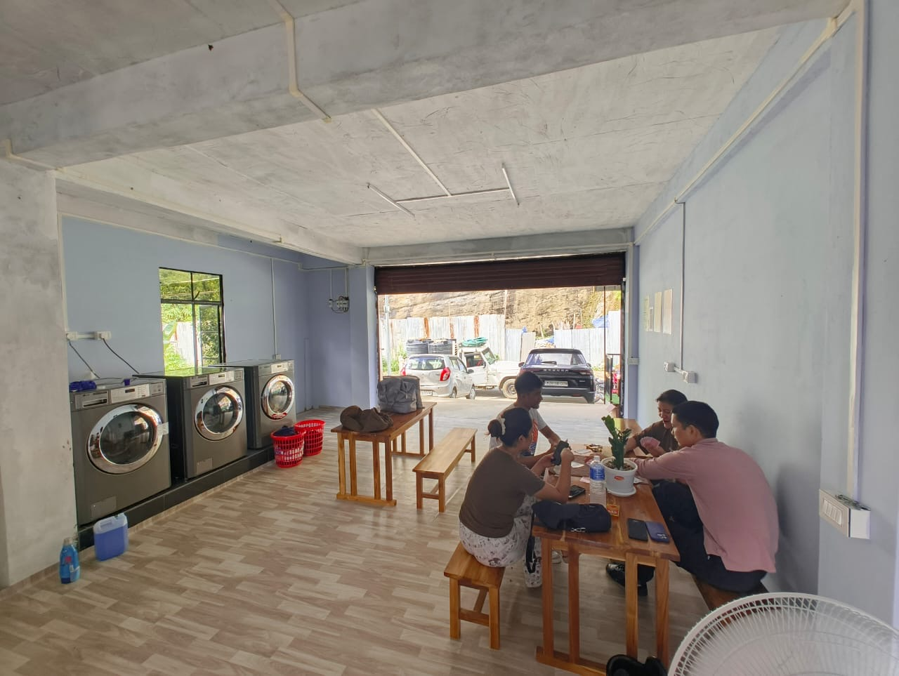

Don't Fight the Culture. Find Where It Bends.
My first recommendation wasn't about the logo or the interior. It was about location. Launching in a neighbourhood where traditional laundry habits were deeply embedded would mean spending most of the effort overcoming resistance. The smarter move was finding the audience most likely to try something new on their own terms.
Mizoram University provided exactly that — students living away from home, managing their own schedules, with no family infrastructure handling laundry for them. American culture has strong aspirational pull in the region, and the laundromat as a concept carried some of that association.
"The positioning didn't need to be complicated. Fast, affordable, and yours to control. That was the whole pitch."

Laundry Point, Aizawl 2025 MVP launch
It Needed to Feel Like Somewhere Worth Going.
The identity had to do two things simultaneously: feel familiar enough that a student from outside the region would recognise the register, and grounded enough that it didn't come across as imported or out of place locally.
The logo works on three levels — a location pin, a washing machine drum, and a face. The name was chosen for simplicity: no unfamiliar terminology, easy to say and remember in any language. Coral leads the palette — energetic and warm — with gold as a grounding accent.

Laundry Point, Aizawl 2025 MVP launch

Laundry Point, Aizawl 2025 MVP launch
The Experience Mattered More Than the Identity.
Getting the brand right was the easier part. The harder work was designing an experience someone could navigate on their first visit — with no prior knowledge, in a location where asking for help wasn't always comfortable.
Hybrid Payment
QR codes for students comfortable with digital. Cash kept available for when power or internet drops — which it does. A staff attendant handles transactions and doubles as a guide during the adoption phase. Cashless-only would have failed the first week.
Language
English throughout for the university audience. Local language signage is planned for the full launch to extend welcome beyond the student base to the broader community the business needs long-term.
The Monsoon Problem, Solved
Being able to collect clean, dry laundry in under an hour turned out to be one of the strongest reasons students kept coming back — not a selling point we led with, but the one that stuck.
The Waiting Experience
Users asked for somewhere to sit and have coffee while they wait. Card and board games were introduced in the MVP. A café element is planned for the full launch — a direct response to what users said, not a feature assumed from the start.

Laundry Point, Aizawl 2025 MVP launch
One Validation and One Redesign.
The soft launch validated the core bet: students would try this and come back. What didn't work was the original in-store instruction design — bilingual text side by side was too busy for someone navigating the space for the first time.
Bilingual text (English + local language) displayed side by side. Full sentences, multiple steps visible at once. Too much cognitive load for a first-time visitor navigating an unfamiliar environment.
Icon-based flow: Pay → Wash → Dry → Done. One action per panel. Minimal text. Scannable at a glance. Works regardless of which language the user is most comfortable in.
Laundry Point, Aizawl 2025 MVP launch
Laundry Point, Aizawl 2025 MVP launch
What Changed on the Ground.
Repeat Visits
MVP feedback confirmed the core hypothesis — students tried the service and returned. The monsoon drying advantage became the most-cited reason for coming back.
User-Driven Roadmap
The café element wasn't in the original brief. It came directly from what users said they wanted while waiting. The MVP produced a feature backlog from actual users, not assumptions.
Instruction Redesign
The bilingual text layout was replaced with an icon-based flow. One round of in-person observation produced a design change that reduced first-visit friction noticeably.
Where It Falls Short
Extending beyond the university audience — to older users less familiar with the concept — remains the hardest design problem still open. The language expansion to local signage is planned but not yet live.
Local language signage, expanded payment options, the café element, and a second location assessment based on MVP data. This case study will be updated as each phase completes.
Strategy Is Still Design.
The decision that shaped everything on this project wasn't visual. It was the recommendation to launch near a university rather than try to convert an audience that wasn't ready. Every downstream choice — the tone, the payment model, the language, the waiting area — became cleaner because the user was right.
What the MVP also confirmed is that iteration in a market with no prior context is slower than iteration in a market where users already have expectations. People can't tell you what they expected when they had no expectations to begin with. The icon instruction redesign came from watching people use the space — not from asking them what they wanted. In low-familiarity contexts, observation is more useful than surveys.